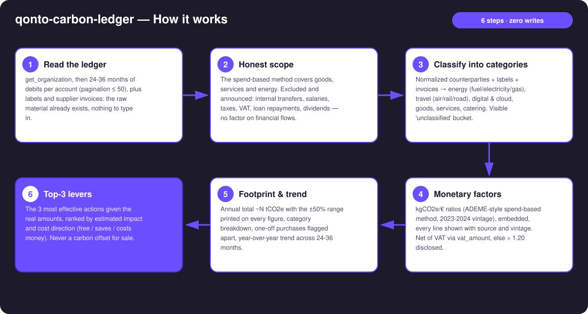
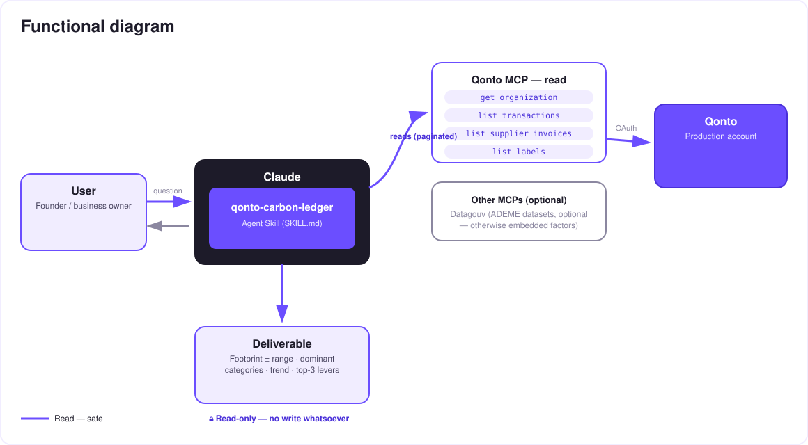

Your bank statement is secretly a carbon ledger — an approximate footprint for your business, from its real spending.
Small businesses never do a carbon assessment — not because they don't care, but because they have no data, no time, and no budget for a consultant. Here's the thing: bank debits ARE data. Every euro spent has a footprint, and the skill reads it straight from the Qonto account:
Debits classified into emission categories × monetary factors (kgCO2e/€, ADEME-style spend-based method) — ±50% uncertainty on every figure.
The 2-3 categories concentrating most emissions, matched to the amounts actually spent.
Year over year across 24–36 months of history — is the footprint going up or down, and why.
The most effective actions given real spending — lever #1 is often free. Never a carbon offset for sale.
It's an orientation pre-assessment, not a regulatory report — and the skill says so itself, loudly. The first carbon number most small businesses will ever see — for two minutes of their Monday morning.
| Prerequisite | Detail | Required |
|---|---|---|
| Qonto production account | Adapts to any organization — get_organization first, nothing hardcoded | ✅ |
| Country | Factors calibrated for France / EU. Other Qonto countries (DE, ES, IT…): identical method, factors flagged as needing adaptation (electricity mix, prices) — stated plainly, estimate still produced and tagged | ℹ️ detected |
| Qonto MCP connected | Official connector (claude.ai / Claude Desktop), OAuth login | ✅ |
| ≥ 6 months of history | Below that: annualization with an explicit warning, never silent extrapolation. 24–36 months for the trend | ⭕ |
| Datagouv MCP | Optional — cross-checks against current ADEME datasets; otherwise embedded (sourced, dated) factors | ⭕ |
| Qonto labels | Optional — sharpen the classification of ambiguous debits | ⭕ |

list_cash_flow_categories returns 403 on the claude.ai connector, the fallback is labelsvat_amount when present, else ÷ 1.20 — with the count of estimated lines disclosed
Solid arrows only: this skill is 100% read. No write, no transfer request, no payment — there is literally nothing to approve. The only deliverable is information: tables and a dashboard. And it never sells carbon offsets.
| Category | Factor (kgCO2e/€ excl. VAT, indicative central value) |
|---|---|
| Energy — vehicle fuel | ~1.5 |
| Energy — electricity (FR mix) | ~0.25 |
| Energy — gas / heating | ~1.9 |
| Travel — air | ~1.2 |
| Travel — rail (FR) | ~0.05 |
| Travel — road, taxi/VTC, freight | ~0.5 |
| Digital, cloud & SaaS | ~0.3 |
| Purchased goods & equipment | ~0.5 |
| Services & professional fees | ~0.15 |
| Catering & food | ~0.7 |
| Insurance & banking fees | ~0.1 |
ADEME Base Empreinte-style monetary ratios, 2023–2024 vintage, ±50% and more — inherent to the monetary method (a cheap flight ≠ low emissions). Every displayed line carries its factor, source and vintage; a Datagouv cross-check is offered when that MCP is present.
| Output | Format | When |
|---|---|---|
| Conversation reply | Markdown tables: footprint + range, categories (factor + source + vintage per line), trend, top-3 levers | Always — the baseline |
| Interactive dashboard | HTML file/artifact: gauge with uncertainty band, category bars, trend, levers | When the host renders files (claude.ai artifacts, Claude Desktop, Claude Code); automatic fallback to tables otherwise |
The ≤ 3-minute demo attached to the PR walks through: the problem (small businesses "have no data") → reading and classifying the account → the honesty about uncertainty → the "your footprint in two minutes" moment → the dashboard and the levers. It runs live on a real production account. The detailed shooting script is kept internal (out of the repo).
| Idea | Effort | Note |
|---|---|---|
| Automatic Datagouv cross-check (up-to-date ADEME datasets) | Low | Optional multi-MCP — detected dynamically, embedded factors otherwise |
| Per-country factor packs (DE · ES · IT · AT · NL · BE · PT) | Medium | Qonto is pan-European; same method, local electricity mix and prices |
| Sector comparison of the footprint | Low | Natural pairing with qonto-sector-benchmark (same spirit: your real flows × public reference data) |
| Monthly lever tracking | Medium | Is the footprint actually going down? Re-runs on the same categories |
| Line-item refinement from rich supplier invoices | Medium | When supplier invoices carry detail |